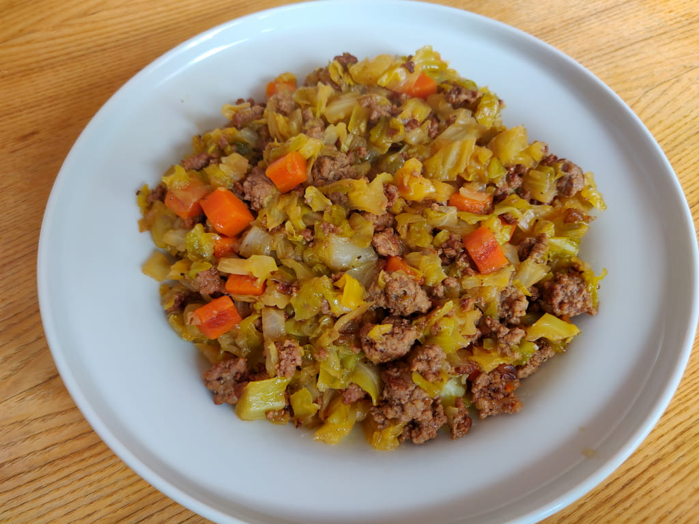

kapsahautis hakklihaga
| Koostisosad |
Kogus |
| kapsas |
1kg |
| porgand |
2 tk |
| Olive oil |
2 Tbsp |
| küüslauk |
2 küünt |
| hakkliha |
400g |
| vesi |
600ml |
| Tomatoes |
3/4 cup |
| maitseained |
enda soovi järgi |
| õli |
2 supilusikat |
- Koori sibul ja porgand
- lõika suupärasteks tükkideks
- pane sibul ja porgand õliga keskmise kuumusega potti praadima
- lisa praadivale sibulale ja porgandile hakkliha
- sellel ajal kui sibul, porgand ja hakkliha praevad lõika kapsas meelepärasteks tükkideks
- kui hakkliha on pruuniks praetud lisa potti kapsas ja vesi
- kui hautis on keema läinud lisa maitseained ja oota kuni kapsas on pehmeks hautanud
